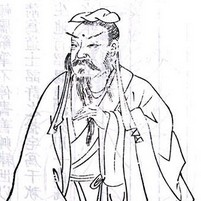

贺知章，会稽永兴人，太子洗马德仁之族孙也。少以文词知名，举进士。初授国子四门博士，又迁太常博士，皆陆象先在中书引荐也。开元十年，兵部尚书张说为丽正殿修书使，奏请知章及秘书员外监徐坚、监察御史赵冬曦皆入书院，同撰《六典》及《文纂》等，累年，书竟不就。后转太常少卿。 十三年，迁礼部侍郎，加集贤院学士，又充皇太子侍读。是岁，玄宗封东岳，有诏应行从群臣，并留于谷口，上独与宰臣及外坛行事官登于岳上斋宫之所。初，上以灵山清洁，不欲喧繁，召知章讲定仪注，因奏曰：“昊天上帝君位，五方诸帝臣位，帝号虽同，而君臣异位。陛下享君位于山上，群臣祀臣位于山下，诚足垂范来叶，为变礼之大者也。然礼成于三献，亚终合于一处。”上曰：“朕正欲如是，故问卿耳。”于是敕：“三献于山上行事，五方帝及诸神座于下坛行事。”俄属惠文太子薨，有诏礼部选挽郎，知章取舍非允，为门荫子弟喧诉盈庭。
盛唐诗韵，以介绍唐朝数位著名典型诗人为主题的一个网页作品。本站以黑白简约典雅的风格设计主要介绍到了唐朝诗人李白、杜甫、王维、贺知章、孟浩然等。有什么不足之处欢迎大家批评指出！
- 
贺知章，字季真.
号四明狂客，贺知章诗文以绝句见长，其写景、抒怀之作风格独特，清新潇洒，著名的《咏柳》《回乡偶书》两首脍炙人口，千古传诵，今尚存录入《全唐诗》共19首。